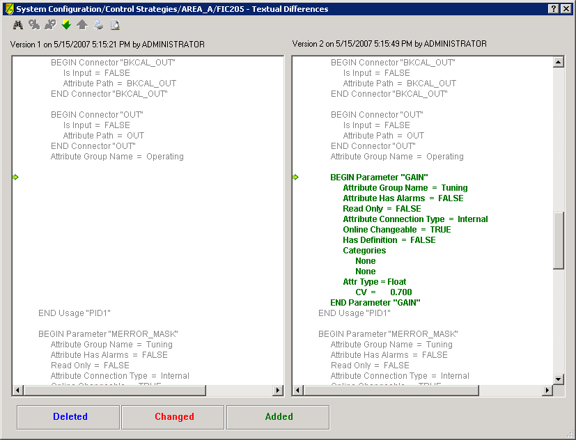
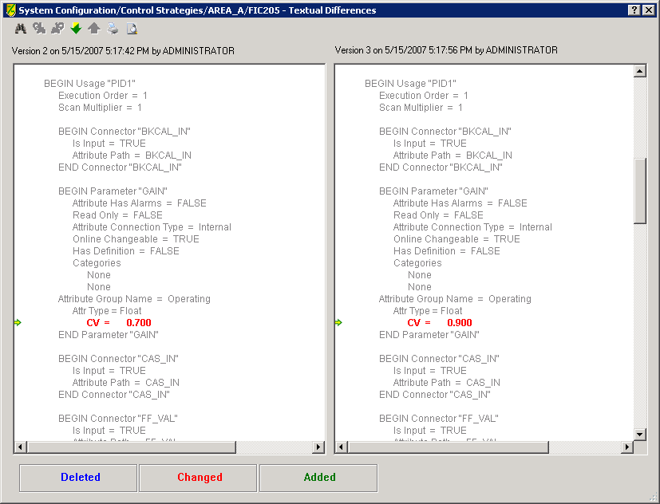
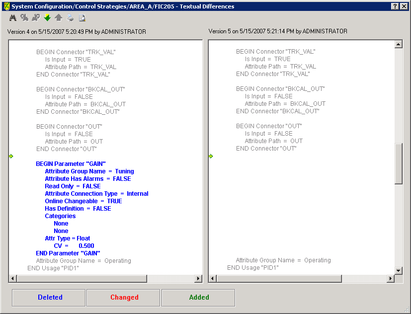

History for library function blocks
Modules in the Version Control database remain linked to the library function block definitions but also contain any values that have been overridden. Understanding this relationship is helpful when viewing the Version Control history for a module.
For example, if you change the value of the GAIN parameter in a particular module's PID block, the change is made to that module. When you check this change in and view history for the module, it appears that the GAIN parameter has been added to the module. This is because the history is documenting the override of a value in the library definition for the PID block. The following graphic shows how the change is displayed.

When you make additional changes to GAIN, these values appear as side-by-side changes since the parameter already exists in the previous checked in version.

When a parameter value is reset to its default value the parameter appears to have been deleted from the module since the parameter once again obtains its value from the library definition. This occurs when you import the module or perform a Version Control rollback or recovery and the value matches the value in the library.
